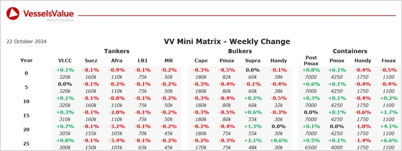

Bulkers:Bulker values remain stable this week, with a small gain for older Supramaxes
Capesize BC Lavender & K Daphne (180,000 DWT, 2009-2010, Daewoo & STX Offshore) sold in an en bloc deal to unknown Chinese buyers for USD 53 mil, VV Value USD 62.36 mil
Capesize BC Spring Bright (174,800 DWT, Jan 2010, Namura) sold SS/DD Due to undisclosed buyers for USD 29 mil, VV Value USD 30.04 mil
Ultramax BC Theresa Pride (62,200 DWT, Dec 2021, Oshima) sold to Unknown Middle Eastern buyers for USD 39 mil, VV Value USD 38.31 mil
Ultramax BC Ocean Ambitious (63,700, Nov 2016, COSCO Shipping Heavy Industry Yangzhou) sold DD Passed to Unknown Chinese buyers for 25.5 mil, VV Value USD 25.2 mil
Handy BC Sophia Ocean (30,000, Apr 1999, Oshima) sold to undisclosed buyers for USD 5.3 mil, VV Value USD 5.25 mil
Handy BC Pacific Pioneer (35,500, Feb 2015, Taizhou Maple Leaf Shipbuilding) sold to unknown European buyers for USD 16.5 mil, VV Value USD 16.73
Tankers:Tanker values remaining stable last week with slight decrease in values observed for older tonnage Aframaxes
VLCC Gesi (305,700 DWT, Mar 2007, Daewoo) sold to undisclosed buyers, potential dark fleet vessel, for USD 43.25 mil, VV Value USD 45.91 mil
LR2 FOS Picasso & FOS Da Vinci (115,800 DWT, 2009, Samsung) sold in an en bloc deal to undisclosed buyers (DD Passed) for USD 84 mil, VV Value USD 82.79 mil
MR2 Arsos M (45,700 DWT, Oct 2004, Minami Nippon) sold to unknown Middle Eastern buyers for USD 16 mil, VV Value USD 15.82 mil
Containers:Container values remaining mostly stable this week, except for an increase in older tonnage Feedermaxes
Feedermax Lila Canada (1,118 TEU, Nov 2006, Jinling Shipyard Jiangsu) sold DD Due to undisclosed buyers for 7.5 mil, VV Value USD 8.54 mil
5x Feedermax Contship Bee, Quo, Pep, Ana, Max (966-1,118 TEU, 2005-2007) sold en bloc to Medkon Lines for 37.5 mil, VV Value USD 34.32 mil
